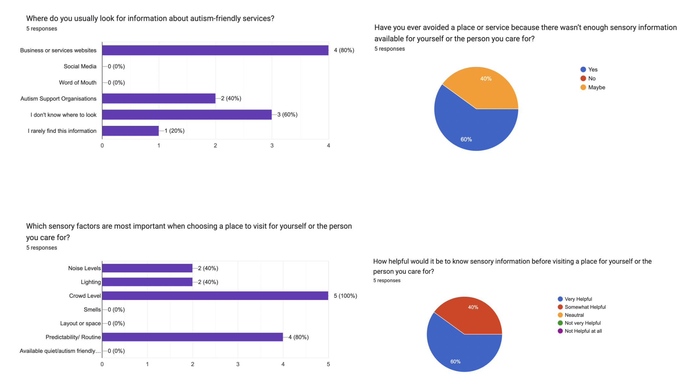
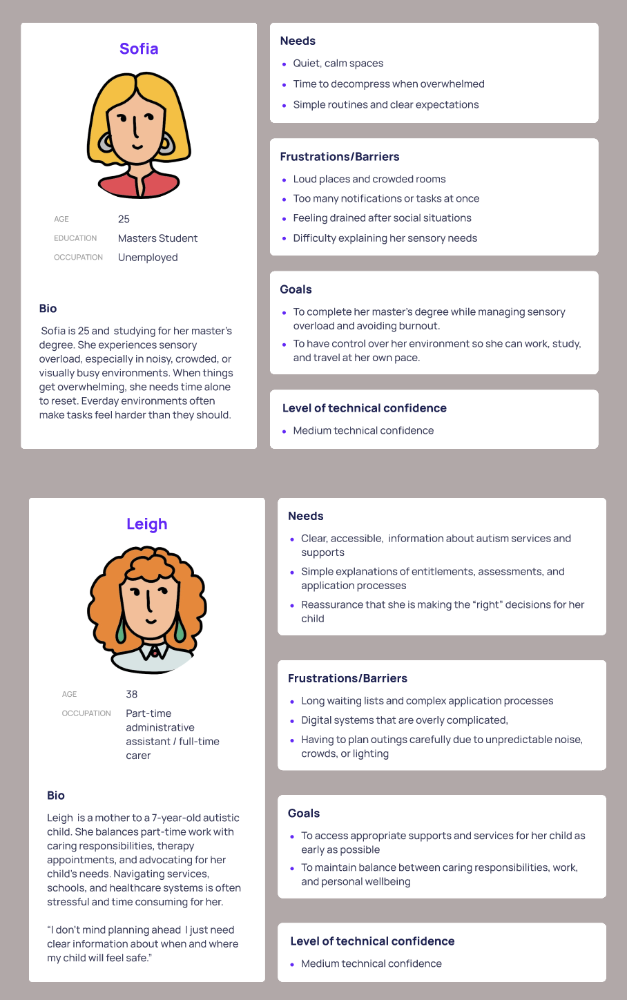
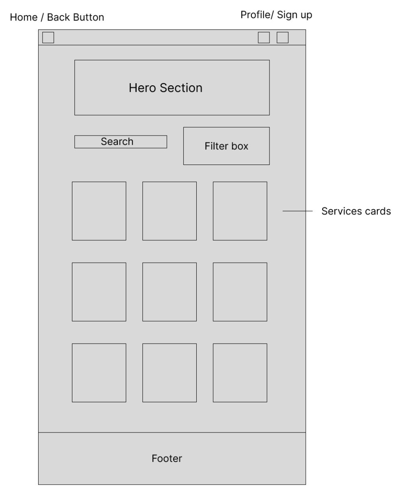
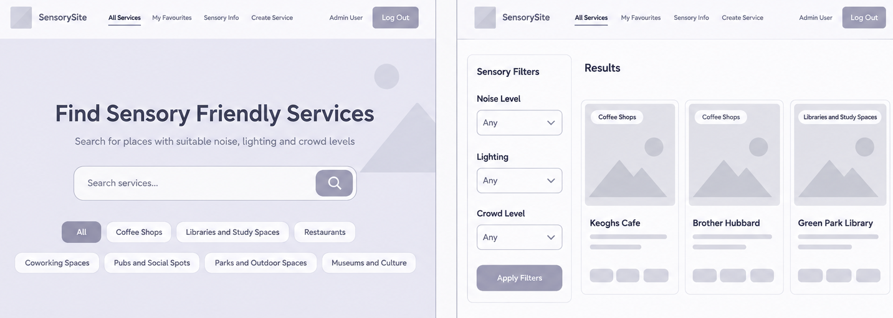
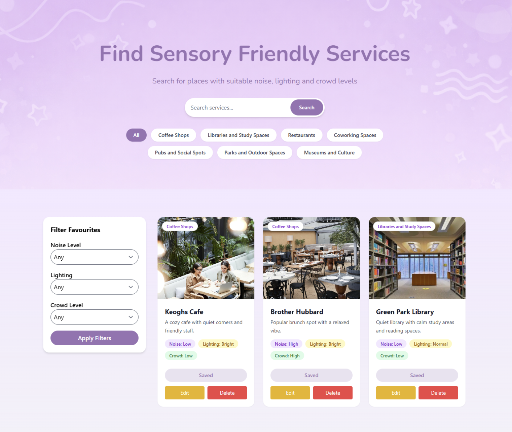

UX/UI · ACCESSIBILITY · WEB DEVELOPMENT
Sensory-Friendly Services
An independently designed and developed web application helping users discover sensory-friendly services and environments through clear information and personalised sensory filters.
View on GitHub →
01 · OVERVIEW
Making sensory information easier to find.
This project explores how digital design can help make everyday services more accessible for autistic and neurodivergent users.
Many services do not provide clear information about sensory environments such as noise, lighting or crowd levels. This can make it difficult for users and their families to know what to expect before visiting a location.
I designed and developed a centralised website that allows users to discover services and view sensory information before deciding where to visit.
02 · RESEARCH
Understanding the problem before designing the solution.
My research explored autism, sensory processing and the barriers that can occur when sensory needs are not considered in digital and physical environments.
I also researched existing accessibility platforms and services to understand how people currently find information about accessible locations.
Two platforms I reviewed were Euan's Guide and AutismHub. This research helped me identify opportunities to make information easier to navigate, filter and understand.
03 · COMPETITIVE RESEARCH
Learning from existing accessibility platforms.
Reviewing existing platforms helped me understand how accessibility information is currently presented and where users may experience difficulties.
Euan's Guide provides community-driven accessibility reviews and information about venues, while AutismHub provides a broader directory of autism-related resources and services.
From reviewing both platforms, I identified an opportunity to create a more focused experience where users could quickly identify sensory information and filter services according to their needs.
04 · USER RESEARCH
Using feedback to guide design decisions.
I conducted a small survey with five adult participants, including autistic adults and people who support autistic individuals.
The survey explored how participants currently find autism-friendly services, which sensory information they consider important and which features would make a platform more useful.
The research showed that sensory information plays an important role when people are deciding whether to visit a place. Participants highlighted noise, crowds, lighting and knowing what to expect in advance as important factors. Many participants also said they would find a central platform for finding autism-friendly services useful.

05 · USER PERSONAS
Understanding the people using the platform.
I created user personas to represent the different types of people who may use the platform. This helped me keep the design focused on real user needs rather than designing for a general audience.
The personas were based on the needs identified during my research, including finding suitable places, understanding sensory information and making visits more predictable.

06 · WIREFRAMES
Planning the experience before building the interface.
I created wireframes to plan the structure and layout of the website before moving into the final visual design.
This helped me organise the main user journey and decide where features such as search, filtering and service information would appear.


07 · DESIGN DECISIONS
Turning research into interface decisions.
The research influenced the core functionality of the website. Rather than requiring users to read large amounts of information, I wanted important sensory information to be visible and easy to compare.
The interface was designed around clarity, predictability and simple navigation. Consistent layouts and structured information help users understand what to expect when moving between different service pages.
The visual style also uses soft colours, clear typography and generous spacing to create a calm and uncluttered interface.
08 · ACCESSIBILITY
Designing for clarity and predictability.
Accessibility was considered throughout the design process rather than treated as an additional feature.
The interface uses clear typography, consistent navigation, structured layouts and strong contrast between text and backgrounds.
The website was also designed to be responsive so that the interface can adapt to different screen sizes and devices.

09 · REFLECTION
What I learned.
This project gave me the opportunity to take a problem from research through to design and development.
I learned how research findings can directly influence interface decisions, particularly when designing for users with different accessibility needs.
Developing the project independently also challenged me to work across both design and technical areas. Using Laravel allowed me to develop my understanding of databases, backend functionality and dynamic web applications.
The project strengthened my interest in creating digital experiences that are not only visually engaging, but also clear, accessible and useful to the people using them.